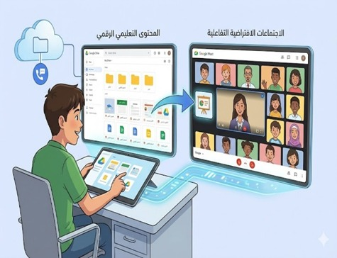
عزيزي الطالب... إن دراستك لموديول إدارة الاجتماعات الافتراضية تطبيقًا على Google Meet تأتي استكمالًا منطقيًا لمهارة إدارة مستودعات التعلم الرقمية، وتسهم في بناء منظومة تعليمية رقمية مترابطة تجمع بين حفظ المحتوى وتنظيمه من جهة، وتوظيفه تفاعليًا من خلال عملية اتصال مرئي من جهة أخرى.
وفي ضوء ما سبق تناوله في موديول إدارة مستودعات التعلم الرقمية تطبيقًا على Google Drive، يتضح أن تنظيم المحتوى التعليمي وحفظه داخل مستودع رقمي لا يمثل غاية في ذاته، بل يشكل مرحلة أساسية تسبق توظيف هذا المحتوى داخل سياقات تفاعلية. فالمحتوى المخزن والمنظم في Google Drive من عروض تقديمية، ومواد تعليمية، وتقارير، وأدوات تقييم يحتاج إلى بيئة تتيح عرضة ومناقشة بشكل متزامن، وهو ما يتحقق من دراستك لهذا الموديول.
يتوقع منك عزيزي الطالب في نهاية دراستك لهذا الموديول أن تكون قادراً على إدارة الاجتماعات الافتراضية بكفاءة.
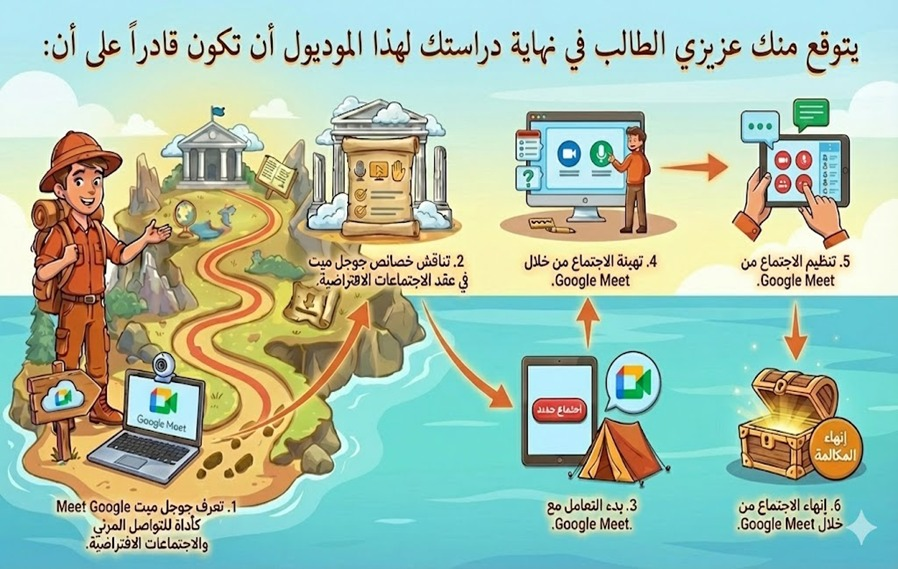
عزيزي المتعلم... قبل البدء في دراسة هذا الموديول، يُطلب منك تنفيذ المهمة المطلوبة اعتمادًا على خبراتك السابقة ومعارفك الحالية دون الرجوع إلى محتوى الموديول، وذلك بهدف التعرف على مستوى أدائك الحالي قبل الدراسة، يرجى مراعاة التعليمات الآتية:
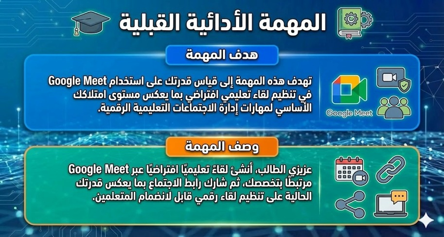
تطبيق عملي على Google Meet ↗هذا الاختبار وضع لقياس مدى تحصيلك في الجوانب المعرفية والمهارية المرتبطة بإدارة الاجتماعات الافتراضية تطبيقًا على Google Meet.
من فضلك عزيزي الطالب اقرأ التعليمات التالية بعناية والاسترشاد بها قبل أن تبدأ في إجابة الاختبار:
عزيزي الطالب...يشمل محتوى الموديول على المعارف والمهارات الخاصة بإدارة الاجتماعات الافتراضية تطبيقًا على Google Meet، ويمكن عرض تلك العناصر كالتالي:
في العقد الأخير شهد العالم تحولاً جذرياً في أنماط التواصل والتعلم، نتيجة التوسع في توظيف تقنيات التحول الرقمي، حيث تحولت العديد من الممارسات التعليمية من نظام الحضور إلى الاجتماعات الافتراضية التي يمكن من خلالها القيام بالمحاضرات والندوات واللقاءات التدريبية؛ ولم يعد الأمر مقتصرًا على إتاحة الاتصال المرئي فقط، بل امتد إلى ضرورة إدارة الاجتماع بوصفه موقفًا تعليميًا متكاملًا يتطلب تخطيطًا مسبقًا وتنظيمًا للتفاعل وضبطًا لسير الاجتماع.
وفي ضوء هذا التحول الرقمي المتسارع برزت Google Meet كأحد الأدوات التي توفر اتصال مرئي متزامن يمكن من عقد اجتماعات افتراضية عبر الويب، مع إتاحة أدوات تنظيمية تدعم إدارة اللقاء، ولا ينظر لها باعتبارها وسيلة اتصال فقط بل إدارة الاجتماع الافتراضي باعتبارة موقفًا تعليميًا متكاملًا يتضمن التخطيط المسبق للاجتماع، وتحديد أهدافه، وتنظيم المشاركين، وضبط التفاعل أثناء التنفيذ، وتوثيق مخرجاته بعد الانتهاء.
وتكمن أهمية Google Meet في قدرته على دمج الاتصال المرئي مع أدوات تنظيمية تسمح بإدارة عناصر الاجتماع المختلفة، فهو يتيح إنشاء اللقاء وتحديد الانضمام إليه، كما يوفر أدوات للتحكم في الحضور، وتنظيم أدوار المتحدثين وضبط التفاعل، كما يتكامل مع التطبيقات التعليمية الأخرى، مما يسمح بتوظيف المحتوى المخزن داخل المستودعات الرقمية أثناء الاجتماع، وهو ما يعكس انتقال العملية التعليمية من نموذج تخزين منفصل إلى نموذج تكامل بين الحفظ والتفاعل.
في إطار توظيف أدوات الاتصال المرئي داخل البيئات والمنصات الإلكترونية، تبرز أهمية التعرف على الخصائص التي تميز Google Meet فيما يلي:
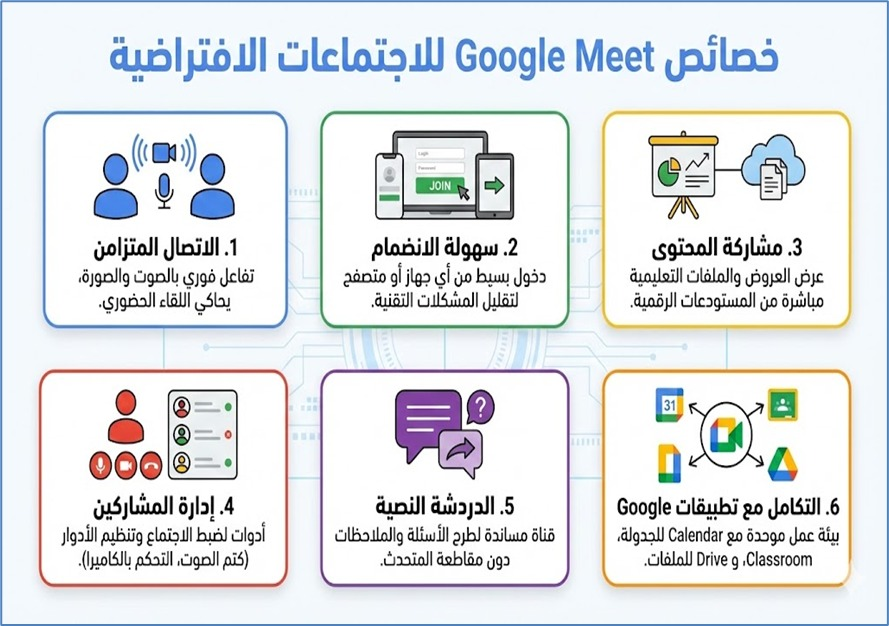
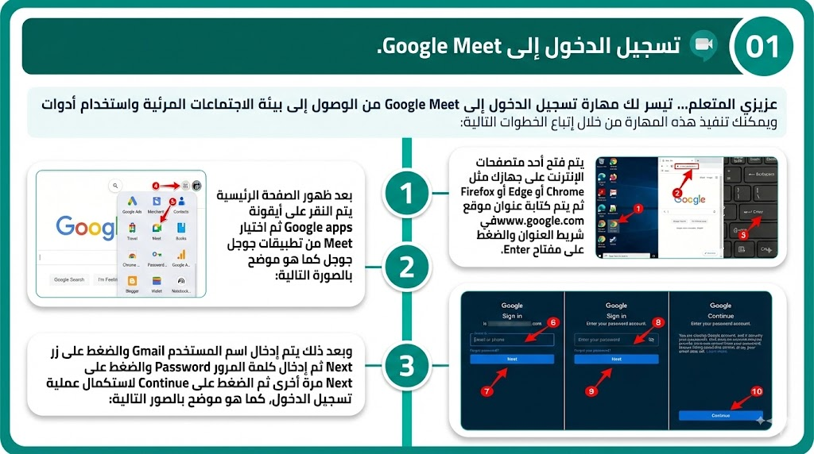
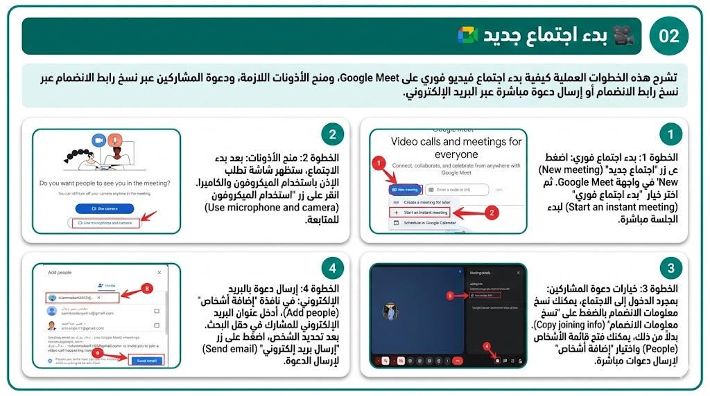
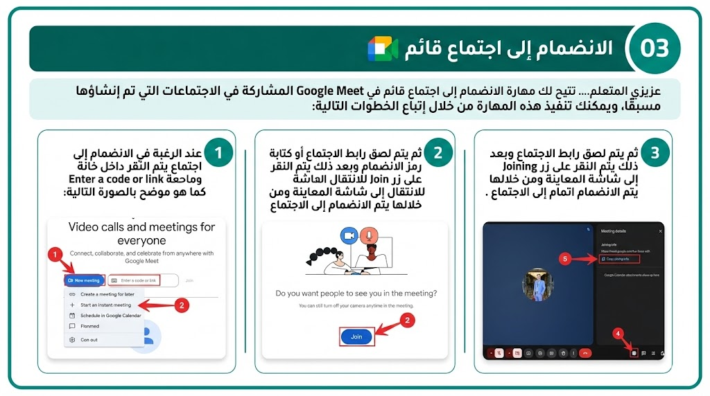
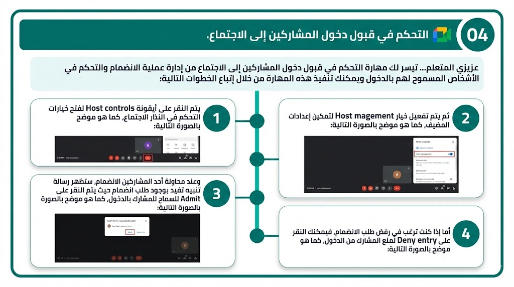
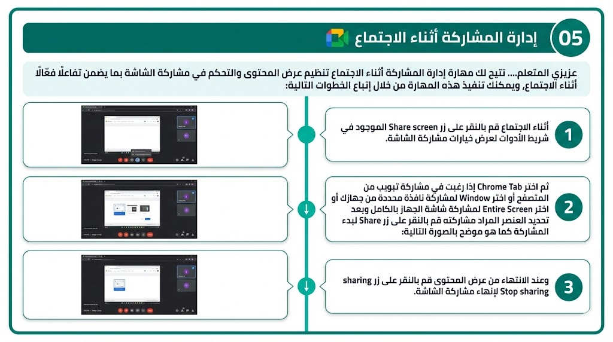
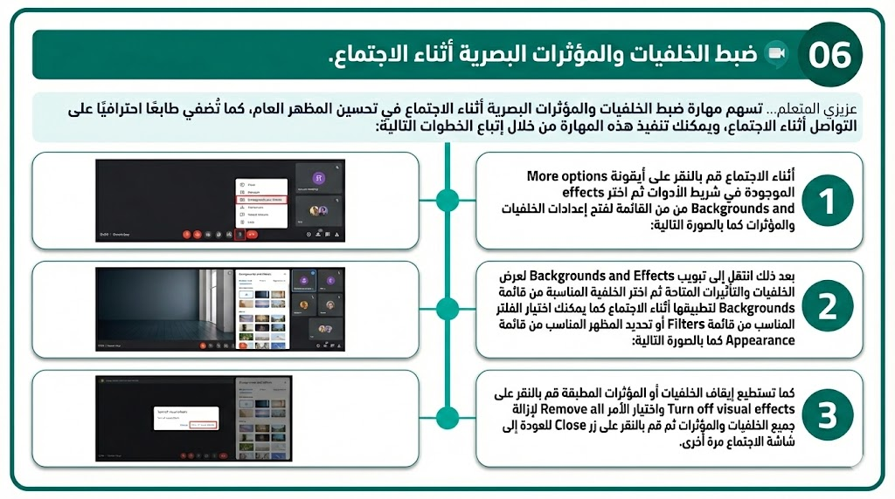
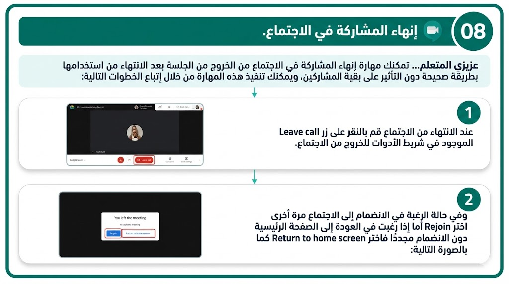
عزيزي المتعلم.. تفاعل مع النظام الذكي من خلال اختيار الكلمات المفتاحية أو الأسئلة الشائعة المرتبطة باستخدام Google Meet في عقد الاجتماعات التعليمية وإدارتها، ثم في ضوء تلك الاستجابات المعروضة قم بتنفيذ المهمة الآتية:
أنشئ اجتماعًا جديدًا داخل Google Meet، واضبط أدوات الميكروفون والكاميرا، ثم قم بنسخ الرابط لمعلمك.
عزيزي المتعلم...بعد الانتهاء من دراسة هذا الموديول، يُطلب منك تنفيذ المهمة الآتية في ضوء ما اكتسبته من معارف ومهارات، وذلك بهدف قياس مستوى تطور أدائك بعد الدراسة، يرجى مراعاة التعليمات الآتية:
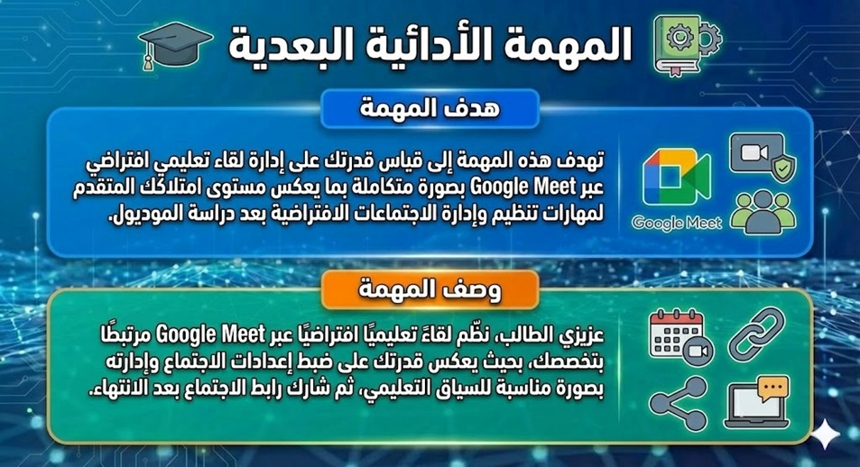
تطبيق عملي على Google Meet ↗هذا الاختبار وضع لقياس مدى تحصيلك في الجوانب المعرفية والمهارية المرتبطة بإدارة الاجتماعات الافتراضية تطبيقًا على Google Meet.
من فضلك عزيزي الطالب اقرأ التعليمات التالية بعناية والاسترشاد بها قبل أن تبدأ في إجابة الاختبار البعدي لقياس مستوى تقدمك: